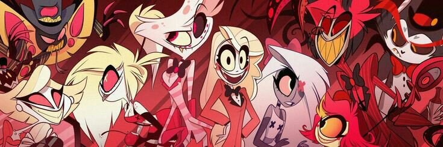

HAZBIN HOTEL
Año: 2019
Creador: Vivienne Medrano
Edades: +18
Género: Musical
Puntuación
Reseña
La serie se centra en Charlie, la princesa del Infierno,
y su búsqueda en la apertura de un hotel para rehabilitar
a los demonios. El Infierno sufre de sobrepoblación y el
Cielo resuelve el problema exterminando rutinariamente a los
demonios anualmente. Charlie, quien creció en el Infierno,
quiere encontrar una solución alternativa para la masacre en masa.
Ella abre el Hotel Feliz que tiene como objetivo enseñarle a los demonios
y a los pecadores a convertirse en mejores personas. Sin embargo,
existe una resistencia considerable, y Charlie y sus amigos deben trabajar
juntos para mantener el hotel en funcionamiento.
Comentarios
Su nombre
Comentario
Comentar
Regresar